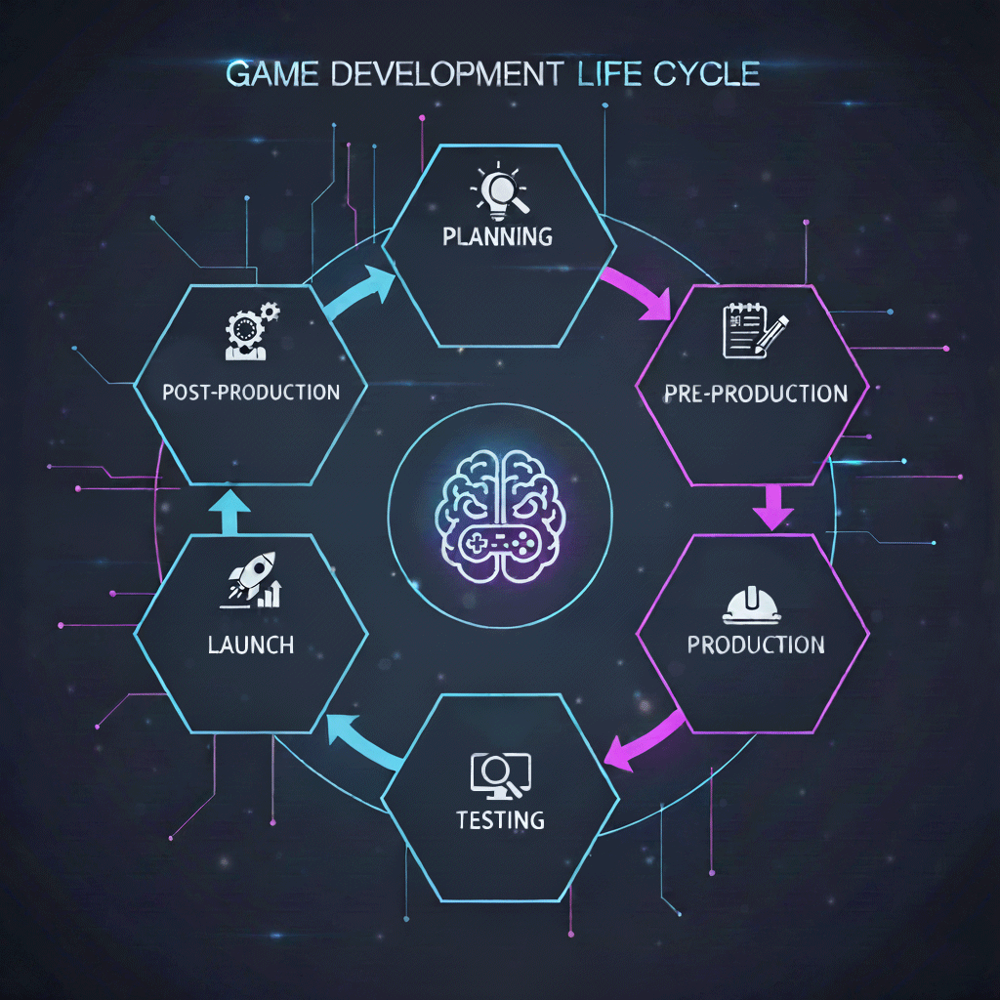

QA Flashcards
1. База: що таке тестування
- Software Testing — процес перевірки ПЗ, щоб виявити дефекти та переконатися, що продукт відповідає вимогам.
- Defect — помилка в коді, вимогах або дизайні.
- Bug — прояв дефекту під час виконання програми (коли бачиш некоректну поведінку).
- QA (Quality Assurance) — процесний підхід: стандарти, правила, покращення процесу розробки, щоб запобігати дефектам.
- QC (Quality Control) — робота з самим продуктом: тестування, рев’ю, інспекції, щоб знайти дефекти.
2. Методи та типи тестування
Методи (як ми тестуємо — доступ до коду)
- Black Box — тестуєш функціонал, не знаючи коду. Робота тільки з вхідними / вихідними даними.
- White Box — тестування з повним доступом до коду та логіки (гілки, умови, покриття коду).
- Grey Box — часткове знання внутрішньої логіки (структура БД, API, архітектура).
Типи (що саме / з якою ціллю тестуємо)
- Functional testing — перевірка, що система робить те, що прописано у вимогах.
- Non-functional testing — продуктивність, безпека, юзабіліті, сумісність тощо.
- За ступенем: manual та automation.
- За стабільністю: Smoke, Sanity, Regression тощо.
3. Рівні тестування
- Unit Testing — тестування окремих функцій / класів / методів. Найчастіше роблять розробники.
- Integration Testing — перевірка взаємодії між модулями (фронт ↔ бек, сервіс ↔ БД).
- System Testing — тестування всієї системи як єдиного цілого в середовищі, наближеному до продакшену.
- Acceptance Testing (UAT) — приймальне тестування, яке проводять замовники / користувачі перед релізом.
4. Функціональне тестування (основні види)
| Тип тестування | Опис | Коли застосовується / мета |
|---|---|---|
| Smoke Testing | Швидка поверхнева перевірка критичного функціоналу після нової збірки. | Вирішити, чи взагалі має сенс продовжувати тестування цієї збірки. |
| Sanity Testing | Перевірка конкретних змін / фіксів. | Упевнитися, що певна функція працює після виправлення або невеликих змін. |
| Regression Testing | Повторне тестування вже перевіреного функціоналу після змін. | Переконатися, що новий код не зламав те, що працювало раніше. |
| Exploratory Testing | Дослідницьке тестування без жорстких сценаріїв. | Швидко знаходити неочевидні дефекти, вивчаючи поведінку системи. |
| Ad-hoc Testing | Неформальне тестування без документації. | Шукати баги на основі інтуїції та досвіду. |
| Positive Testing | Тестування з коректними даними. | Перевірити, що система працює згідно з вимогами при правильному використанні. |
| Negative Testing | Тестування з некоректними даними та діями. | Перевірити, як система поводиться з помилками користувача / невалідними даними. |
| Boundary Value Testing | Перевірка граничних значень: мінімум, максимум, трохи нижче / вище меж. | Виявити проблеми з обробкою крайніх значень і діапазонів. |
| Equivalence Partitioning | Поділ вхідних даних на класи еквівалентності (валідні / невалідні). | Зменшити кількість тестів, зберігши адекватне покриття. |
5. Життєвий цикл бага (Bug Life Cycle)
Bug Life Cycle (життєвий цикл дефекту) — це послідовність статусів, через які проходить баг від моменту виявлення до повного закриття. Розуміння цього циклу допомагає QA, девелоперам і менеджерам правильно відслідковувати стан дефектів.
Типові етапи Bug Life Cycle
- New — тестувальник створює баг-репорт. Дефект описаний, задокументований, але ще не призначений відповідальному.
- Assigned — баг призначений конкретному розробнику або команді. Хтось офіційно відповідає за його виправлення.
- In Progress / Open — розробник працює над фіксом: відтворює проблему, аналізує причину, змінює код.
- Fixed — розробник вніс зміни в код і вважає, що проблема усунута. На цьому етапі баг ще не вважається закритим.
- Ready for Retest / To Verify — збірка з фіксом потрапила на тестове середовище, і дефект готовий до перевірки тестувальником.
- Retest — QA виконує кроки відтворення, перевіряє, чи дійсно проблема зникла, і чи не з’явилися побічні ефекти.
- Closed — дефект більше не відтворюється, всі пов’язані сценарії працюють коректно. Баг офіційно закривається.
- Reopened — якщо під час ретесту або в наступних збірках проблема знову проявилась, баг відкривають повторно й цикл проходиться ще раз.
- Deferred / Postponed — виправлення відкладено (низький пріоритет, мало впливає на користувача, немає ресурсів прямо зараз).
- Rejected / Won’t Fix — дефект не вважають проблемою (наприклад, очікувана поведінка або дублікат іншого бага), тому його не будуть виправляти.
Роль QA у Bug Life Cycle
- коректно описати дефект: кроки, очікуваний та фактичний результат;
- проставити пріоритет і серйозність (severity / priority);
- слідкувати за зміною статусів і нагадувати, якщо критичні баги “висять”;
- ретельно ретестити після фіксу та вирішувати, чи можна закривати дефект.
1. SDLC — Software Development Life Cycle
SDLC (Software Development Life Cycle) — це
життєвий цикл розробки програмного забезпечення.
Definition (EN): SDLC is a structured process
that defines all phases of software development, from idea and
requirements to release and maintenance.

SDLC описує усі етапи створення ПЗ і допомагає зробити розробку прогнозованою, контрольованою та якісною.
Типові етапи SDLC
- Planning — визначення цілей продукту, бізнес-потреб, обсягу робіт, ризиків і приблизних строків/ресурсів.
- Requirement Analysis — збір і аналіз вимог, уточнення функціоналу, узгодження очікувань замовника й користувачів.
- Design — розробка архітектури системи, продумування модулів, інтеграцій, структури БД, інтерфейсів.
- Implementation / Development — безпосереднє написання коду, реалізація фіч, unit-тести, інтеграція модулів.
- Testing — перевірка продукту (функціональне, нефункціональне тестування, регрес, UAT тощо).
- Deployment — розгортання на продакшені, реліз до кінцевих користувачів.
- Maintenance — підтримка, фікси, оновлення, розвиток продукту після релізу.
2. STLC — Software Testing Life Cycle
STLC (Software Testing Life Cycle) —
життєвий цикл тестування програмного забезпечення.
Definition (EN): STLC is a set of phases that
describe the testing process, from test planning and design to
execution and test closure.

STLC зосереджується саме на процесі тестування всередині проєкту і є частиною SDLC.
Основні етапи STLC
- Requirement Analysis — тестувальники аналізують вимоги, шукають прогалини, ризики, уточнюють, що і як буде тестуватися.
- Test Planning — визначення стратегії, обсягу, підходів, ресурсів, інструментів і графіка тестування.
- Test Case Development — створення тест-кейсів, чек-листів, підготовка тестових даних та очікуваних результатів.
- Environment Setup — підготовка тестового середовища: стенди, БД, доступи, конфігурації, необхідні інструменти.
- Test Execution — виконання тест-кейсів, логування результатів, заведення баг-репортів.
- Test Cycle Closure — аналіз результатів, звіти про якість, висновки й рекомендації для наступних ітерацій.
3. SDLC vs STLC
SDLC і STLC тісно пов’язані, але відповідають за різні рівні процесу.
| SDLC | STLC |
|---|---|
| Описує повний життєвий цикл розробки ПЗ: від ідеї та вимог до підтримки після релізу. | Описує життєвий цикл тестування в межах SDLC: що робить QA від аналізу вимог до закриття тестового циклу. |
| Охоплює бізнес-аналіз, дизайн, розробку, тестування, деплой, підтримку. | Фокусується на аналізі вимог, плануванні, дизайні тестів, їх виконанні та написанні звітів. |
0. Game Development Life Cycle (GDLC)
Game Development Life Cycle — послідовність етапів від ідеї до підтримки після релізу. QA залучається на кожному етапі з різним фокусом.

| Етап | Що відбувається | Роль QA |
|---|---|---|
| Planning & Pre-production | GDD, прототипи, вибір рушія, концепт-арти. | Тестування прототипів, рев'ю вимог, оцінка ризиків. |
| Production | Активна розробка: рівні, механіки, AI, інтеграція. | Build-to-build regression, функціональне тестування, звіти. |
| Alpha | Feature Complete — ключові механіки є, контент не повний. | Пік навантаження QA. Пошук блокерів, перевірка логіки. |
| Beta | Content Complete — весь контент готовий. Feature Freeze. | Полішинг, баланс, перфоманс, підготовка до сертифікації. |
| Gold / Master | Release Candidate — фінальна збірка для магазинів. | Фінальний smoke-тест, перевірка сертифікації (TRC/TCR). |
| Post-launch | Патчі, DLC, live-ops, івенти. | Регресія патчів, аналіз телеметрії та краш-логів гравців. |
1. Інструменти тестувальника (QA Tools у рушії)
У GameDev QA рідко тестують гру "наосліп". Для прискорення використовуються вбудовані інструменти (Debug Tools):
- Debug Menu / Dev Console: Спеціальне меню для QA та розробників. Дозволяє вмикати God Mode, Noclip (політ крізь стіни), видавати предмети, міняти рівень, скіпати квести.
- Time Manipulation: Зміна швидкості гри (Slow-mo або Fast-forward). Допомагає тестувати таймінги анімацій, hit-frames або швидку зміну дня і ночі.
- Telemetry / Heatmaps: Інструменти аналітики, які показують "теплові карти" дій гравців (де найчастіше ходять, де вмирають). Допомагає тестувати баланс.
- Freecam (Вільна камера): Відв'язування камери від персонажа, щоб оглянути рівень за межами видимості гравця (пошук дірок у текстурах).
2. Тестування Штучного Інтелекту (AI) та NPC
- NavMesh (Навігаційна сітка): Невидима полігональна сітка, по якій рушій дозволяє ходити NPC. Баг: NPC застрягає в камені або йде в стіну — це зламаний NavMesh.
- Line of Sight (LoS) & Aggro: Перевірка зору ворогів. Чи бачить ворог гравця крізь стіну? Як швидко злітає "агро", якщо гравець ховається в кущі?
- State Machine (Кінцевий автомат): AI працює за станами (Idle -> Patrol -> Combat -> Flee). QA має перевірити, чи коректно ворог перемикається між ними (наприклад, чи не стоїть він на місці, коли його б'ють).
- Pathfinding: Здатність NPC знайти шлях до цілі, обходячи динамічні перешкоди (наприклад, якщо гравець поставив ящик на шляху).
3. Глибинне тестування механік та Edge Cases
- Hitbox vs Hurtbox: Hitbox — зона удару зброї. Hurtbox — зона на тілі персонажа, яка отримує урон. QA перевіряє їх синхронізацію, щоб гравець не отримував урон від повітря.
- Animation Canceling: Переривання тривалої анімації (наприклад, атаки або лікування) перекатом або стрибком. QA перевіряє, чи не дає це експлойт на подвійний DPS.
- Save-scumming: Перезавантаження збереження перед генерацією луту або кидком кубика. Перевірка, чи не ламає це стейт квесту або логіку гри.
- Inventory Overflow: Що станеться, якщо підняти 999-й предмет, коли максимум 99? Чи випаде він, чи зникне, чи крашне гру?
- Frame Data (для файтингів/соулс-лайк): Підрахунок кадрів невразливості (i-frames) під час перекату. Якщо при 60 FPS перекат має 12 i-frames, QA перевіряє, чи дійсно урон не проходить у ці долі секунди.
4. Типові ігрові баги та термінологія
- Soft-lock: Гра не впала, але гравець застряг (зник сюжетний NPC, не з'явився тригер виходу). Hard-lock — повне зависання або краш.
- Out of Bounds (OoB): Вихід за межі ігрового рівня через прогалину в колізіях (невидимих стінах). Часто веде до нескінченного падіння.
- Z-fighting: Графічний баг, коли дві текстури на одному рівні "блимають", змагаючись за пріоритет відмальовки камерою.
- Clipping (Кліппінг): Проходження 3D-моделей одна крізь одну (меч стичить крізь стіну, плащ проходить крізь ноги персонажа).
- LOD (Level of Detail) Pop-in: Механізм підвантаження низькополігональних моделей здалеку. Баг — коли якісна модель з'являється надто пізно і різко ("стрибає" перед очима).
5. Специфіка баг-репорту в GameDev
Окрім стандартних кроків, баг-репорт у геймдеві обов'язково містить:
-
Build ID та Платформу: Наприклад,
Build 1.4.2_RC, PS5 DevKit. Білди збираються щодня, і баг у ранковому білді може не існувати у вечірньому. -
Локацію та Координати: Дебаг-вектор типу
(X: 3450, Y: 120, Z: -45). Без цього левел-дизайнер ніколи не знайде висяче в повітрі дерево на мапі площею 20 км². - Save-файл (Збереження): Розробник не буде витрачати 5 годин, щоб дійти до боса, на якому стався краш. Сейв прямо перед багом — закон.
- Відео відтворення (Capture): Текстом неможливо описати некоректну анімацію, розсинхрон звуку чи кліппінг. Відео потрібне для 90% візуальних багів.
- Crash Dump / Logs: Файли дампу пам'яті, які генеруються при вильоті гри. Це головний інструмент програмістів для пошуку причини Hard-lock.
Методології розробки: Waterfall, Agile та Scrum
Тестувальник повинен розуміти різницю між Waterfall, Agile і Scrum, тому що процес тестування, обсяг документації та взаємодія з командою залежать від вибраної методології.
1. Waterfall (каскадна модель)
Waterfall — лінійна послідовна модель. Кожен етап має бути завершений повністю перед тим, як починається наступний. Підходить для проєктів з фіксованими вимогами.
- Requirements — збір вимог;
- Design — проєктування;
- Implementation — написання коду;
- Testing — тестування тільки після завершення розробки;
- Deployment — реліз;
- Maintenance — підтримка.

2. Agile (гнучка методологія)
Agile — гнучкий підхід, заснований на швидких ітераціях, постійному фідбеку й адаптації до змін. Замість великого релізу — інкременти кожні 1–4 тижні.
- Швидкі ітерації (iterations / sprints);
- Можна змінювати пріоритети;
- Мінімум зайвої документації;
- Регулярні поставки цінності (working product).
Agile — це загальний підхід, під яким існують фреймворки: Scrum, Kanban, XP. Найпопулярніший — Scrum.
3. Scrum (найпоширеніший Agile-фреймворк)
Scrum працює короткими циклами — спринтами (1–4 тижні). Команда працює як одна група: QA, деви, дизайнери, аналітики.
Ролі:
- Product Owner — відповідає за пріоритети;
- Scrum Master — допомагає команді й усуває блокери;
- Development Team — виконує роботу.
Артефакти:
- Product Backlog — повний список фіч;
- Sprint Backlog — задачі на спринт;
- Increment — готовий результат спринту.
Церемонії:
- Sprint Planning
- Daily Standup
- Sprint Review
- Sprint Retrospective

4. Порівняння Waterfall vs Agile vs Scrum
- Waterfall — фіксований план, нуль гнучкості.
- Agile — постійні зміни, інкременти.
- Scrum — Agile з чіткими правилами, спринтами і ролями.
У GameDev, Web та Mobile команда майже завжди працює за Scrum або схожими Agile-практиками. Тестування триває протягом усього спринту, а не наприкінці.
Мій конспект курсу QA
Тут ви можете розгортати кожне заняття і зберігати свої власні нотатки для нього. Все зберігається прямо у вас у браузері!
Модуль 1: Що таке тестування і хто такий QA
Тестування ПЗ — процес перевірки продукту на відповідність вимогам. Мета — знайти дефекти до доступу користувачів.
Різниця між QA, QC та Testing:
- QA (Забезпечення якості): Фокус на ПРОЦЕСІ (превентивні заходи).
- QC (Контроль якості): Фокус на ПРОДУКТІ (написання та проходження тестів).
- Testing (Тестування): Найвужчий етап у межах QC (натискання кнопок, фіксація дефектів).
Для чого потрібне? Практика: Баг на продакшені може коштувати компанії репутації та грошей. За правилом 'Кривої Боема', баг на продакшені в 100 разів дорожчий за баг у вимогах.
Модуль 2: 7 Принципів тестування
- Тестування демонструє наявність дефектів, а не їх відсутність.
- Вичерпне тестування неможливе. Перевірити 100% варіантів не можна.
- Раннє тестування (Shift-left). Залучення QA від збору вимог.
- Скупчення дефектів (Парето). 80% багів у 20% модулів.
- Парадокс пестициду. Тести треба регулярна оновлювати.
- Тестування залежить від контексту. Медицина і ігри тестуються по-різному.
- Омана про відсутність помилок. Продукт без багів нічого не вартий, якщо він не потрібен юзеру.
Модуль 3: Баг: види, як виникає та життєвий цикл
Звідки беруться Дефекти? (Error -> Defect -> Failure)
'Баг' — це сленгове слово. За ISTQB є три поняття:
- Error (Помилка): Дія людини, яка призводить до неправильного результату (програміст втомився і помилився).
- Defect (Дефект): Недосконалість у коді чи документації, яка виникла через Error.
- Failure (Збій): Відхилення системи від очікуваного результату під час роботи (краш додатку в руках юзера).
Різниця між Severity та Priority:
- Severity — вплив на технічну частину (визначає QA). Серйозність (Blocker, Critical, Minor).
- Priority — вплив на бізнес (визначає PM). Як швидко потрібно фіксити.
Модуль 4: STLC та SDLC: Життєві цикли
SDLC: Цикл розробки ПЗ від ідеї до підтримки.
STLC: Цикл тестування ПЗ.
- Requirement Analysis (Аналіз вимог).
- Test Planning (Оцінка, Entry/Exit критерії).
- Test Design (Розробка тест-кейсів).
- Environment Setup (Налаштування тестового стенду).
- Test Execution (Проходження тестів і заведення багів).
- Test Closure (Звіт за результатами тестування).
Модуль 5: Методології розробки
- Waterfall (Каскадна): Кожен наступний етап починається після повного завершення попереднього. Жорстка документація. Зміни вносити важко.
- Agile: Гнучкий підхід, постійна адаптація та спілкування з клієнтом.
- Scrum: Робота дрібними Спринтами (2 тижні). Щоденні стендапи. Інструмент Agile.
Модуль 6: Види та рівні тестування. Тестування змін
Рівні тестування:
1. Unit (модульне), 2. Integration (інтеграційне), 3. System (системне - QA), 4. Acceptance (UAT - замовник).
Тестування змін (Change-related):
- Confirmation Testing (Ре-тест): Перевірка КОНКРЕТНОГО виправленого багу (переконатись, що він зник).
- Regression Testing (Регресія): Перевірка ВСЬОГО ІНШОГО функціоналу після фіксів. Доводить, що нові зміни не зламали старий код.
За метою:
Функціональне: Smoke (критичний функціонал працює), Sanity. Нефункціональне: Performance, Security, Usability.
Модуль 7: Техніки тест-дизайну
- Еквівалентне розділення (EP): Всі дані розбиваються на класи однакової поведінки. Беремо по 1 значенню з валідного і невалідних класів.
- Аналіз граничних значень (BVA): Перевіряємо саму межу та значення +1 і -1 (найбільше багів ховається тут).
- Таблиця рішень (Decision Table): Матриця логічних умов і результатів.
- Перехід станів (State Transition): Застосовується для об'єктів, які міняють статуси (напр., транзакції).
- Попарне тестування (Pairwise): Тестування всіх параметрів по парах (скорочує час та кількість кейсів).
Модуль 8: Тестова документація
Test Plan: Загальна стратегія тестування, обсяг робіт, ризики.
Checklist: Перелік ідей для перевірок. Коротко, без деталізованих кроків (для досвідчених QA).
Test Case: Детальний опис конкретного сценарію. Обов'язково має складатися з: 1. Title, 2. Pre-conditions (Умови системи), 3. Steps (Точні кроки, натискання) та 4. Expected Result (Що маємо отримати).
Bug Report: Створюється, якщо під час виконання тест-кейсу Actual Result відрізняється від Expected Result.
Модуль 9: Робота з вимогами
Вимоги мають бути: Однозначними, Повними, Несуперечливими та Тестованими.
Якщо на співбесіді запитають 'Як би ви протестували
олівець/ліфт?':
Правильна відповідь: 'Спочатку я запитаю у
вас ВИМОГИ! Для кого цей олівець? Для малювання на папері
чи космосу?'. Тестувальник ніколи не починає створювати
чек-листи чи писати кейси без повного з'ясування
контексту.
Модуль 10: Клієнт-серверна архітектура та HTTP
HTTP Methods (Запити): GET (отримати дані без зміни), POST (створити нове або форма логіну), PUT/PATCH (повноцінно/частково оновити), DELETE (видалити).
Статус-коди відповіді (Response):
-
2xx(200 OK, 201 Created): Запит пройшов і обробився успішно. 3xx(301, 302): Редірект.-
4xx(400 Bad Request, 401 Unauthorized, 404): Помилка сталася на боці Клієнта (він відправив щось не те або немає прав). -
5xx(500 Internal Server Error): Помилка Сервера. Система впала (це баг бекенду!).
Модуль 11: API Testing та Postman
Тестування API обходить UI (графічний інтерфейс) і напряму стукається до сервера для швидшої перевірки логіки та безпеки.
Postman — головна програма для цього. На співбесіді важливо згадати:
- Collections: Об'єднання запитів у папки для організації та виконання разом (Collection Runner).
- Environment Variables: Змінні для збереження токенів та автоматичної підміни URL серверів (DEV -> PROD).
- Tests: Міні-скрипти на JavaScript для автоматичної перевірки статус-кодів (Assertion).
Модуль 12: Бази даних та SQL-запити
SQL дозволяє керувати інформацією напряму в Базі Даних (виконувати CRUD-операції).
Питання №1 на інтерв'ю: JOIN (об'єднання таблиць):
-
INNER JOIN— бере тільки повні збіги з обох таблиць. Даних, що є тільки в 1-й таблиці, у фінальному результаті не буде. -
LEFT JOIN— бере ВСЕ з лівої таблиці, а з правої приєднує збіги. (Якщо збігу немає, в полі будеNULL). -
RIGHT JOIN— аналогічно, бере все з правої таблиці.
Агрегатні функції: COUNT(),
MAX(), SUM(). Для групування
використовується блок GROUP BY.
Модуль 13: Основи Web-фронтенду та Chrome DevTools
- HTML: Каркас сторінки. CSS: Дизайн. JS (JavaScript): Інтерактивність і відправка запитів.
- Elements: Можна видалити `display: none` та протестувати приховані об'єкти (DOM).
- Console: Логування JavaScript помилок фронтенду. Шукаємо тут причину 'мертвої' кнопки.
- Network: Моніторинг всіх відправлених запитів. В Payload бачимо, що полетіло, а у Response — яку помилку повернув сервер (напр. 500).
- Application: Зберігає LocalStorage та Cookies (де зазвичай лежить авторизаційний Токен).
Модуль 14: Особливості Mobile Testing (Android & iOS)
- Фрагментація пристроїв: Тисячі варіантів дисплеїв, кнопок та виробників (Android).
- Переривання (Interruptions): Що буде під час вхідного дзвінка або будильника?
- Мережа: Тестування при втраті інтернету в ліфті (слабкий зв'язок 2G).
- Перехід у фон (Background): Чи втратяться дані, якщо згорнути додаток на годину?
- Логування: Використовуємо інструменти типу Android Studio (Logcat) або Charles Proxy.
Тести / Quiz
Обери тему і пройди невеликий тест. Обирай варіанти відповідей, а потім переходь до наступного питання.
Практика: Баги, Тест-кейси, Чек-листи
Обирай вкладку і тренуйся писати артефакти або генеруй їх.